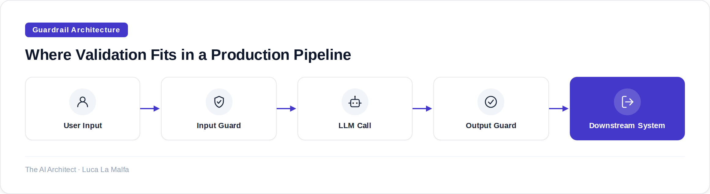
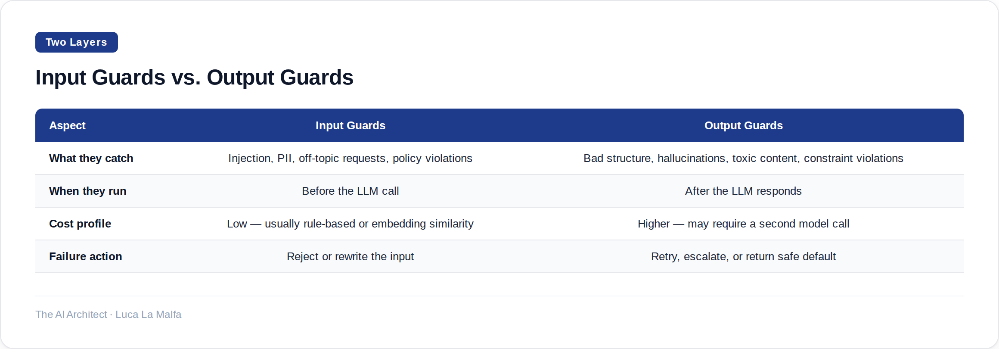

Why validating what your LLM returns is as important as any other layer of your production stack.
September 15, 2026
There's a category error that shows up in a surprising number of enterprise AI projects I review: the team treats the LLM as a trusted system component. The prompt goes in, the text comes out, and it gets used — sometimes directly in a database write, sometimes rendered into a UI, sometimes handed to the next agent in a pipeline. Nobody checks it. The assumption is that a well-written prompt produces well-structured, safe, in-bounds output. That assumption will eventually be wrong, and when it is, the failure is usually invisible until it isn't.
The correct mental model is this: LLM output is untrusted external input, the same way you'd treat data arriving from a third-party API or a user-submitted form. You validate it. You sanitize it. You have a defined policy for what happens when it fails validation. This isn't pessimism about the models — it's just standard defensive engineering, applied to a new kind of data source.

There are two distinct places to apply validation: before the model sees anything, and after it responds. Input guards handle things like prompt injection attempts, PII that shouldn't be sent to an external API, off-topic requests that will produce useless responses, and content policy violations. Output guards are where you enforce structure (is this actually valid JSON?), check factual constraints (does the cited document ID exist?), flag hallucinated entities, detect toxic or off-brand language, and verify that any generated code doesn't do something you didn't ask for. Both layers matter, but they catch different failure modes, and conflating them leads to gaps.
Structure enforcement is the most common starting point, and the one that bites teams hardest when they skip it. Even with a model that's been carefully prompted to return a specific JSON schema, you'll occasionally get a response with an extra key, a number where you expected a string, or a markdown code fence wrapping the JSON. These are small deviations. But if your downstream code does response['confidence'] and that key is missing because the model returned confidence_score instead, you have a silent data integrity bug. Schema validation with a strict parser catches this immediately and gives you a retry path or a fallback, rather than a corrupt database row you discover three days later.
Beyond structure, semantic validation is where the work gets genuinely interesting and also harder. Structural checks are deterministic — the JSON either parses or it doesn't. Semantic checks ask: is the content actually appropriate? Is the summary faithful to the source document? Does the generated SQL only touch the tables it's supposed to? These checks often require a second model call — a cheaper, faster model acting as a judge — or a set of rule-based heuristics. The cost of that second call is real, and you have to weigh it against the risk profile of the task. For a customer-facing financial report, you run the semantic check. For an internal draft that a human will review before anything happens, maybe you don't.
Retry logic is the other half of the equation that often gets designed as an afterthought. When a guard fires, what happens? The naive answer is "retry the LLM call." That works sometimes, but if the failure is systematic — your prompt is ambiguous, or the model genuinely can't produce valid output for this input — you'll burn tokens in a loop and degrade latency. A better pattern is structured retry with feedback: include the validation error in the retry prompt so the model knows what it got wrong. After two or three failed retries, fall through to a human escalation path or a safe default response. Never let the retry loop run unbounded in production.

One practical note on where guardrails live architecturally: they belong in your application layer, not in your prompts. Prompt-based instructions like "always return valid JSON" or "never mention competitor names" are useful hints, but they are not enforcement. A sufficiently adversarial user input, an edge case in the model's training distribution, or a model update from your provider can break them at any time. Real enforcement happens in code that runs every time, regardless of what the model decided to do. Think of prompt instructions as the happy-path guide and validation code as the actual contract.
How I wire this into client projects
For most enterprise deployments I set up, the guardrail layer is a thin middleware class that sits between the application and the LLM client. It holds a registry of validators — schema validators, regex-based PII detectors, a toxicity classifier for customer-facing outputs — and a retry policy (max two retries with error feedback, then escalate). I keep it separate from the prompt templates deliberately: when a new risk surface appears, I add a validator without touching the prompt logic. The two concerns stay decoupled, and the validation layer is independently testable. That last part matters more than people expect — you can write unit tests against your guardrail layer with synthetic bad outputs before you've written a single prompt.
guardrails-ai/guardrails — Input/output guards to detect and mitigate LLM risks, and enforce structure.
Inspired by Quoting Boris Cherny (Simon Willison)